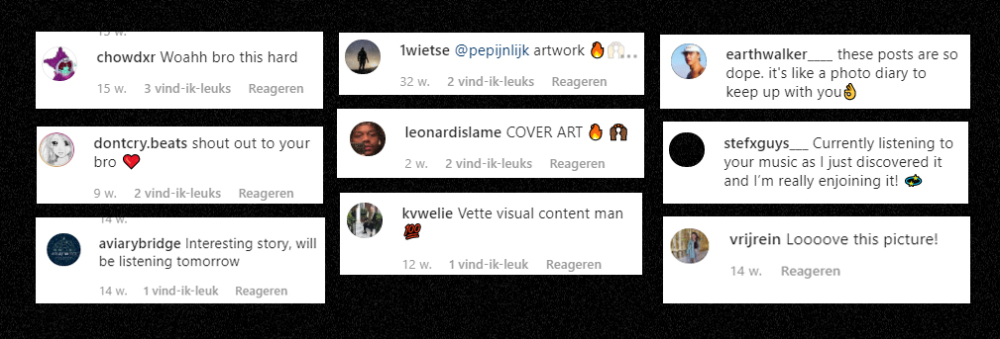
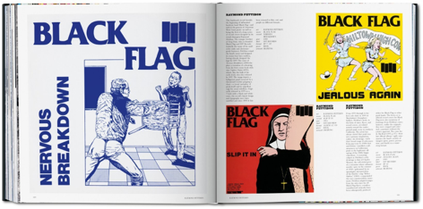

ONTWERP IS DE UITNODIGING,
MUZIEK HET FEESTJE
Een zoektocht naar de rol van grafisch ontwerp
in het digitale landschap van muziekstreaming
INHOUDSOPGAVE
ABSTRACT
Als (hobby) muzikant ben ik altijd al geobsedeerd geweest door de kracht van muziek. Over de laatste decennia heeft de wereld van muziek zich razendsnel ontwikkeld, en muziek is nu toegankelijk in a kwestie van seconden. Mijn passie voor muziek gaat verder dan fan zijn of de melodieën en ritmes, maar omsluit ook alles wat de muziek versterkt. Een van de grootste aantrekkingskrachten in grafisch ontwerp was en is voor mij de wereld van bands met een do-it-yourself mentaliteit en het image wat ze presenteren in een digitale wereld. Zo lang als ik mij kan herinneren heb ik in mijn leven muziek opgezocht, geluisterd en verzameld.
Vóór de komst van internet richtte de discussie over democratisering van de muziekindustrie zich op het onderscheid tussen doe-het-zelf-labels, onafhankelijke platenlabels en grote platenmaatschappijen. Met het internet en digital streaming platforms zoals Spotify en Apple Music in de 21ste eeuw is het landschap van muziek maken getransformeerd. Met een paar klikken vind je suggesties, gecureerde playlists of dat ene obscure nummer waarvan je de vinyl nergens meer kon vinden. Hoe hebben streamingdiensten onze relatie met muziek veranderd? Hoe is muziek verandert met de opkomst van streaming diensten? In deze thesis onderzoek ik wat deze veranderingen betekenen voor zowel muzikant als ontwerper.
Met mijn broer Pim ‘Sebastian Kamae’ de Jonge, 22, als study case, ga ik op zoek naar wat voor rol grafisch ontwerp kan spelen in het promoten van kleinere, professionele muzikanten op digitale platformen. Daarnaast werken we samen aan zijn nieuwe album ‘Enjoy the Ride’ en kijken we wat er komt kijken bij de release van een ontworpen, conceptuele plaat in de praktijk.
In een zoektocht naar een potentiële niche voor grafisch werk na mijn afstuderen probeer ik in deze thesis een overzicht te maken van de verschillende spelers en technieken die er bij de promotie van artiesten op deze platforms komt kijken. Het is een poging om tips, tricks en kennis te bundelen en dit toe te passen in het werk dat ik maak en de diensten die ik mijn potentiële klanten graag zou willen leveren. Muziek en mijn grafische werk staan me nader aan het hart en ik hoop in deze thesis een interessante kijk te bieden op een niche in ons werk als ontwerpers en mijn kennis bij te dragen. Ontwerp is de uitnodiging, de muziek het feestje.
INTRODUCTIE
Muziek heeft iets magisch. Zo lang als ik mij kan herinneren heb ik muziek in mijn leven opgezocht, geluisterd en verzameld. Op mijn 15e verjaardag kreeg ik mijn eerste elektrische gitaar, en als ik wat extra centjes over heb ging dat naar een mooie vinyl album. Over de laatste 10 jaar heb ik het hele internet leeg getrokken en mijn harde schijven vol geramd met .mp3s. Tot ik Spotify Premium kreeg. Spotify is een Zweeds Digital Streaming Platform (DSP) dat door middel van algoritmes nieuwe muziek aanbiedt. Vrijblijvende gebruikers krijgen te maken met advertenties, maar met Spotify Premium betaal je een tientje per maand voor hogere geluidskwaliteit dan gratis luisteraars, geen reclameonderbrekingen, de mogelijkheid om mobiel te luisteren zónder de shuffle-mode en de optie om muziek offline te beluisteren.
In 2018 steeg de totale omzet van on-demand streamingplatforms ondersteund door advertenties (inclusief YouTube, Vevo en Spotify (gratis versie) met 15% in 2018 tot $760 miljoen1. Het aantal gebruikers van DSP’s is in de laatste 4 jaar gestegen van 76.8 miljoen in 2015 tot 278 miljoen in 20182. Naast Spotify zijn de grootste spelers Apple Music, Deezer, Youtube Music, Google Music en Amazon music. Het streamen van muziek heeft het spel veranderd en muziek is vandaag de dag toegankelijker dan ooit. Met een paar klikken vind je suggesties, gecureerde playlists of dat ene obscure nummer waarvan je de cd nergens meer kon kopen. Het streamen van muziek heeft onze manier van luisteren en de toegankelijkheid van muziek veranderd. De fysieke vorm van muziek is in populariteit enorm gekelderd en is van sterspeler gedegradeerd tot een kleine speler op de bank(3). Dit veranderd niet alleen onze perceptie en omgang met muziek, maar veranderd ook het landschap waarin muziek gemaakt en gepresenteerd wordt. Als freelance grafisch ontwerper werk ik voornamelijk voor en met muzikanten. Zoals ik al eerder benoemde ben ik zelf ook muzikant, maar het is vooral door mijn broer dat ik met mijn muzikale klanten in aanraking kom. Mijn broer, Pim de Jonge, 22, is afgestudeerd in Music Production aan ArtEZ Enschede en is sindsdien freelancer en professioneel muzikant. Hij produceert en schrijft lo-fi hip hop, een enorme trend binnen muziek, vooral op internet. Het grootste deel van zijn inkomen komt van de bovengenoemde DSP’s, voornamelijk Spotify en Apple Music.
Als grafisch ontwerper ben ik anders naar muziek gaan kijken. Een van de redenen waarom ik grafisch ontwerper wilde worden is de inspiratie van bands en artiesten die een hele wereld rondom hun muziek creëren in zowel visuele prestatie en de interactiviteit met hun fans. Het is deze uitnodiging die werelden, waardoor ik een deel van dat universum wil worden en mijn passie voor hun muziek of muziek in het algemeen wilde delen. Het werken met muzikanten en het verzorgen van een visuele kant bij hun muziek is een passie die ik graag door zou willen zetten na mijn afstuderen, wat nu toch al gevaarlijk dicht bij begint te komen. Maar hoe doe je dat? Toen ik afgelopen zomer online en in bibliotheken onderzoek deed, kon ik geen instructies of hulplijnen vinden naast veel waardeloze internet-zelfstudies over ‘hoe je een bandlogo maakt’ en oudere doe-het-zelf-musicusboeken. Er zijn geen richtlijnen, geen zelfstudies, en ik heb enorm gezocht naar schetsen of iets van het proces te zien, met weinig resultaat.
In deze thesis ga ik binnen het digitale landschap van muziek op zoek naar de rol die grafisch ontwerp hierin kan spelen. Omdat ik een broer heb als ‘inside job’ en ikzelf als grafisch ontwerper met hem regelmatig samenwerk, gebruik ik Sebastian Kamae (de artiestennaam van mijn broer3) als study case en rode draad door mijn verhaal. Zij aan zij met het schrijven van deze thesis hebben wij ook een nieuw album ontwikkeld en uitgebracht, wat ik mooi kan gebruiken als proefkonijn. Met mijn broer en zijn leven als muzikant als voorbeeld en praktische ervaring ga ik op zoek naar de ontwikkelingen binnen de muziekwereld en wat voor impact dit kan hebben op mijn grafisch ontwerp. Dit onderzoek is de perfecte gelegenheid om praktisch een betere grip te krijgen op mijn rol als grafisch ontwerper in deze wereld van digitale muziek.
HOOFDSTUK I: ANDERS ONTWERPEN
Muziek streamen heeft niet alleen gevolgen voor muzikanten, het heeft ook invloed op de manier waarop grafisch ontwerpers werken. De focus ligt nu op digitaal beeld en dat verandert de manier waarop we vormgeven. De CMYK kleuren van print wordt vervangen door RGB scherm kleuren en het gemiddelde DSP verlangt enkel een square 1500x1500 pixels album illustratie. Als ontwerper moet je rekening houden met het feit dat je artwork grotendeels in een klein formaat gezien wordt en dat het dus op moet vallen; het is namelijk een klein beeld in een zee van albumhoezen of staat ter illustratie in een hoek op de pagina. Vergeleken met vinyl, dat je vast kunt houden en waar je de verschillende lagen uit moet pakken om bij de plaat te komen. Het digitale artwork is niet alleen fysiek een stuk kleiner dan de traditionelere muziekvormen, het verandert de manier waarop we visuele ideeën communiceren. Het maakt niet uit wat voor soort muziek je maakt, mensen krijgen een eerste indruk van hoe de muziek klinkt door het eerste wat ze zien: de artwork. Het artwork is een essentiële ruimte om de aandacht te trekken en een verhaal te vertellen over artiest, de single of het album. Deze afbeelding kan de juiste mensen naar je muziek leiden en van casual luisteraars fans maken. Als er echter een saai en onnauwkeurig beeld je muziek representeert, kan dit een negatieve invloed hebben op de verkoop. De album hoes vertegenwoordigt de muzikant. Niet alleen voor dat ene, nieuwe moment van je nieuwste release, maar het wordt ook onderdeel van je branding. Als artiest bouw je nu eenmaal een imago op. Het kan beïnvloeden hoe mensen je waarnemen en wat ze zouden moeten verwachten wanneer ze daarna je geprofileerde sociale media of website bezoeken of denken naar een concert te gaan. Hoewel je muziek natuurlijk altijd de ultieme presentatie van jou als muzikant zal zijn, is een visueel element essentieel. Het album is de verpakking van de muziek en zelfs als je iets uitbrengt op elk kanaal en elke top tien, krijg je gewoonweg minder luisteraars als je artwork er niet uit ziet. Je kent vast het gezegde “Don’t judge a book by it’s cover”, maar ik betrap mezelf toch altijd aangetrokken te zijn tot die ene mooie omslag in de zee van de boekenwinkel. En zo werkt het precies hetzelfde op de new releases curation van Spotify.
Voor Sebastian Kamae zijn laatste album Enjoy the Ride hadden mijn broer en ik als doel om te kijken wat voor invloed een actieve campagne in de huidige lo-fi markt. Mijn broer heeft door een stage goede connecties met een grote rap producer in Chicago, waar lo-fi en rap enorm populair zijn. Pim gaat meerdere keren per jaar op en neer, schrijft zijn albums voornamelijk daar en werkt op zijn albums veel met gastartiesten uit de stad zelf. Het grootste aantal luisteraars komen volgens Spotify uit Los Angeles (~7,500 luisteraars), Chicago (~6,500 luisteraars) en New York (~6000 luisteraars), met Amsterdam pas op 5e plaats (~5,500 luisteraars). Voor het nieuwe album dachten we passend om de promotie te focussen op zijn ervaringen in Chicago en het proces van het schrijven van het album. Samen met Rick van der Klooster, mijn vriend en fotograaf, zijn we een beeldbank gaan samenstellen uit foto’s van mijn broer en GoogleMaps screenshots met frappante en iconische taferelen in de stad zelf. Mijn broer heb ik gevraagd een journaal bij te houden met zijn bezigheden rondom het maken van een album en de ervaringen tijdens zijn weken verblijf te Chicago. Vanuit deze beeldbank zijn foto’s gekozen die op de artwork kwamen of in de social media promotie. Doordat we maximaal de playlists wilden halen werd elke single een van deze beelden, met elk een eigen kleur die elke week zijn social media een verse tint gaf. Elke dag werd een foto met klein bijschrift geplaatst zodat de fans hem niet alleen kunnen volgen in zijn proces, maar ook begrijpen dat er iets speciaals aankomt.
Net als het genre zelf is de generale esthetiek van lo-fi gecentreerd rondom ‘chillen’. Lo-fi muziek als genre is een gigantische hype geworden op YouTube (vooraan grootste kanaal ChilledCow5met 4 miljoen abonnees) met vele live muziekstreams en ‘music to study to’-playlists. Veel van deze YouTube playlists zijn nu ook te vinden op Spotify. De muziek in lo-fi is opzettelijk relaxed en de melodieën zacht en repetitief; het is perfecte achtergrond muziek. Lo-fi staat voor ‘low fidelity’ en is een genre die juist de imperfecties in de opnames opzoekt, vaak gepaard met een lagere kwaliteit in de muziekproductie. Bekende jazz-stukken worden gesampled tot relaxte beats en vaak zijn er geluiden te horen die insinueren je naar een vinylplaat luistert. Vaak wordt er ook gebruik gemaakt van ambient geluiden zoals regen, het bos of een haardvuur. De muziek wordt in de meest gevallen gerepresenteerd met anime animaties en afbeeldingen. Dit is vanuit een nostalgie voor anime en geïnspireerd door anime zoals Samurai Champaloo, die dezelfde lo-fi kwaliteiten in de soundtrack gebruiken. Lo-fi is in de laatste paar jaar enorm populair geworden en staat constant in je YouTube-suggesties, het platform waar het genre als eerste veel aandacht kreeg. De video’s geven vaak in de titel al aan dat het voor relaxt studeren is, of voor een rustige avond, knus onder de dekens.

Als Sebastian Kamae gebruikt mijn broer die muziek als basis, maar combineert het met R&B en rapmuziek, wat de muziek meer pop maakt en dus minder achtergrondmuziek. Binnen de eentonigheid van het genre proberen we op te vallen met een eigen image, zonder het lo-fi gevoel kwijt te raken. Ik bewerkt de afbeeldingen expres met een grain (ruis) en speel met kleuren uit balans. De kleuren waar we mee werken zijn exclusief voor digitaal gebruik en daardoor in RGB, waartegen het traditionele CMYK kleurenschema digitaal veel fletser voorkomt. Door mijzelf als ontwerper simpele restricties op te leggen zoals een raster/grid, kleurrand en gebruik van typografie past alles bij elkaar zonder individuele creativiteit in de weg te staan. Het uiteindelijke albumontwerp zelf had als doel maximaal op te vallen door gebruik te maken van de felle RGB kleuren. Voor mij blijft het lastig om met zekerheid te zeggen wat voor invloed een artwork of beeld heeft op de populariteit van een nummer of album. Het speelt zeker een rol, en met Enjoy the Ride hebben we veel positieve reacties gehad op de artwork en de promotie, wat we nog niet eerder op deze schaal hebben gezien. Mensen geven aan dat ze normaal zelfpromotie irritant vinden (zeker met het steeds hoger aantal advertenties op Instagram) maar de dagelijkse ‘blog’ die wij ter promotie schreven kreeg het voor elkaar interesse aan te wakkeren en meerdere luisteraars lieten weten juist daarom zijn muziek te gaan checken. Ook de reviews (Engelstalig) van het album zijn lovend, bijvoorbeeld:
"Sebastian Kamae has had one of the most interesting rollouts for a project in 2019. Coming from the Netherlands, Kamae went on a journey through Chicago documenting everything with pictures and singles with captions to accompany each on his instagram. He described places he went, music he made, and people he met. With each snippet of information released, the understanding of the importance of this time built up to the release of Enjoy the Ride. At times it felt like you were right there with him, maybe taking some of the pictures and reminiscing on a formative experience between friends. That’s the sentimentality Kamae brings to his craft, and it’s evident throughout his album. As I listened to Enjoy the Ride for the first time, it felt like an epic journey through the streets of Chicago. Much like Odysseus searched for his path back home, Kamae sought his path through music. Enjoy the Ride is the culmination of this journey told through song."


Het zijn wel de artiesten met een duidelijke stijl of richting die er uitspringen, of die een stempel op de ‘scene’ zetten. Zoals eerder is geschreven, is lo-fi een hype en heeft het genre meer een achtergrondrol qua muziek. Luisteraars letten dus minder op een bepaalde artiest of dat ene album, maar zetten gewoon een kant-en-klare YouTube-playlist of een Spotify-playlist aan. Het visuele aspect van een lo-fi muzikant speelt daardoor meer een rol in het laten zien van een standaard, een professionaliteit. Aangezien de scene op het internet is zijn er honderden, (zo niet duizenden) concurrerende lo-fi artiesten, en een verzorgde website, artworks en social media geeft het vertrouwen aan de luisteraar dat jou muziek van goede kwaliteit is, dat je weet waar je mee bezig bent. Mijn broer brengt binnenkort een track uit met glimlip , een lo-fi muzikant die ook samen met één iemand werkt die zijn artworks maakt, altijd binnen hetzelfde stramien. Dit zie je veel, want binnen het genre wordt er constant veel muziek uitgebracht en hebben muzikanten dus ook veel artworks nodig. Veel mensen posten onder de artworks dat ze dat ze steeds maar terugkomen voor de ontzettend coole artwork. Ook wij merken met Enjoy the Ride dat zowel mijn broer als ik ineens allerlei positieve berichten krijgen die de artwork en promotiecampagne prijzen en vragen naar wie het artwork maakt. In die zin kan ik concluderen dat de artwork toch verschil maakt. Als grafisch ontwerper ontwerp je namelijk een ervaring. Bij mijn stageplek, Renate Boere, hield dit het uitpakken, openen en gebruik van een boek in, maar ik zie het verschil niet met een digitale stream van een song, ook verpakt in zijn artwork, promotie of zelfs videoclip. Deze ervaring moeten we opnieuw gaan ontwerpen. We kunnen niet achter blijven en vasthouden aan een systeem wat achterhaalt is. De digitale verkoop van muziek is nu het grootste deel van de markt, samen met het inkomen van live optreden.

Ik vond het in mijn onderzoek lastig om interessante voorbeelden of goede case studies van grafisch ontwerpers in muziek te vinden. Zoekend door de bibliotheken van Den Haag vond ik alleen oude DIY-boeken die veel te algemeen zijn en verouderd zijn, en op het internet wordt je overspoeld door allerlei sketchy websites die zich richten op beginnende bandjes en nooit de diepte in gaan maar je begraven in advertenties. Hier schoot ik niets mee op, ik zocht oude schetsen en beschrijvingen van het ontwerp proces; de conversaties tussen muzikant en ontwerper! Dit bleek nog niet zo eenvoudig. Het aantal keer dat ik een boek met ‘de beste albumhoezen ever’ ben tegengekomen is tenenkrommend, want het is moeilijk daar iets vanaf te leiden.
De albumhoezen die het niet gehaald hebben, die leken mij juist interessant. Er staan geen schetsen of notities bij en ook hier schoot ik niet veel mee op. Ik richtte mijn hoop op interviews met ontwerpers. In interviews met beroemde muziekontwerpers zoals bijvoorbeeld Peter Blake (ontwerper van de ’ Sgt. Pepper’s Lonely Hearts Club ) kan ik niet de ‘les’ vinden die ik zoek. Peter Blake zag de hoes expliciet als een kunstwerk in plaats van een albumhoes, het was bijna een stukje theaterontwerp. De band hielp mee met het samenstellen van alle portretten en de kleuren op de cover. Maar hoe ontwerp je dan een goede cover? Het antwoord op die vraag kon ik niet vinden, tot ik me iets realiseerde. Stefan Sagmeister (een icoon als het om platenhoes ontwerp gaat, onder andere voor de Rolling Stones, Lou Reed en Talking Heads) hielp me begrijpen waarom het niet mogelijk is een formule te maken voor het creëren van een album art:
“Als een grafisch probleem vind ik de visualisatie voor muziek een van de sappigste. Ik geloof dat muziek een van de meeste emotionele kunsten is. Om een visual te maken dat uit die emotie komt en ergens aan te koppelen dat juist inherent niet-visueel is, is een ongelofelijk interessante onderneming. ”
Een perfecte formule was niet realiseerbaar en achteraf gezien was het misschien een foute verwachting. Als ik er goed over na denk is het onmogelijk om een stempel te zetten op en ontwerp proces, kunst is nu eenmaal subjectief. Belangrijker is de connectie met de muzik(l)anten en kennis van wat er op de markt werd en wordt gebracht.
Mijn broer is één van vele muzikanten die wel van hun muziek kunnen leven, maar geen popster is. Deze doelgroep is met de ontwikkeling van het internet, en al deze digitale, toegankelijke kanalen zoals YouTube en Spotify snel aan het groeien. Het verschuiven van inkomens van labels naar zelfstandige muzikanten heeft ook een impact op grafisch ontwerp in de muziekwereld. Waar ontwerpers/kunstenaars eerst ingehuurd werden door labels, gaat dat nu ook via de muzikant zelf. Dit betekend vaak dat iemand in hun omgeving deze rol oppakt, zoals een broer die grafisch ontwerp studeert of een vriend die lekker kan tekenen. Mijn broer geeft zelf al aan: iedereen denkt tegenwoordig dat hij een graphic designer is. Je hebt geen diploma meer nodig om grafisch ontwerper te zijn, en met Photoshop gemakkelijk te kraken en downloaden, kan iedereen aan de slag. Ik merk dat vrij weinig klanten snappen wat het werkproces van een ontwerper inhoudt en hoeveel tijd het kan kosten. Soms kan het voelen alsof we ons eerst moeten bewijzen. Misschien zijn we als ontwerpers niet transparant genoeg. Een voorbeeld van DIY is Intoku, het back-up alias van mijn broer, gebruikt bijvoorbeeld een door Pim zelfgemaakt, standaard design voor elke track en mijn broer doet dit gewoon zelf. Natuurlijk heeft niet iedereen heeft een broer in grafisch ontwerp. Pim en ik zien een verschillend aantal types zijn als het om de visuele kant van hun muziek gaat. De eerste variant maakt het allemaal niks uit en vaak zetten ze zelf wat in elkaar of zorgen ze als ze een track samen maken, de andere muzikanten de productie van het visuele op zich nemen. Voor het zelf in elkaar zetten van artwork zijn er een aantal diensten online beschikbaar, zoals bijvoorbeeld https://replacecover.com , waar je heel beperkt, maar eenvoudig, een album artwork in Spotify-stijl in elkaar kan knutselen. Het tweede type heeft een vast persoon, of een aantal. Dit is vaak iemand uit je omgeving, een vriend of collega. Het derde en laatste type, en iets wat meer en meer voorkomt, vergaart zijn artworks door op Instagram rond te neuzen en beeldmakers daar aan te spreken: of ze voor jou muziek ook niet iets willen maken? Het aantal beeldmakers is daar zo verzadigd dat als je 10 mensen een berichtje stuurt, je binnen no time wel iemand hebt die samen wilt werken.
Er zou eigenlijk een overzichtelijk platform moeten zijn waar beeldmakers en muzikanten met een interesse naar de combinatie van hun krachten elkaar makkelijk kunnen ontmoeten. Een soortgelijk platform bestaat (nog) niet, maar er zijn wel initiatieven zoals AIGA’s Design+Music festival. Het idee is met bepaalde tools om lokale Design + Music-evenementen samen te stellen en te laten zien hoe design onze verbinding met muziek helpt verrijken en meer waarde voor de kunst creëert. Zij ontwikkelen op het moment een Design+Music toolkit, een gids om je te helpen bij het organiseren van een Design + Music-thema in je eigen omgeving. Ze proberen ook de connectie te maken tussen designers en de mensen met grote budgets, zoals platenlabels, bedrijven of festivals. Een gat in de markt? Misschien iets op met mijn afstuderen verder te ontdekken. Ik merkte al snel dat ik mijn onderzoeksvragen en verwachtingen bij moest stellen. Er is overduidelijk geen handboek voor ontwerpers, maar wel duidelijk een nieuwe manier waarop we het visuele aspect van muziek ervaren. Om beter te begrijpen hoe ik in deze niche aan de slag kan nemen we een kijkje naar muziek streamen in de praktijk.

HOOFDSTUK II: REALITY CHECK: SEBASTIAN KAMAE
Sebastian Kamae is een prachtig voorbeeld van de nieuwe groep zelfstandige artiesten. Er zit geen platenlabel tussen hem en zijn luisteraars dat een deel van zijn inkomsten en royalty’s claimt ter compensatie van promotie, verspreiding en begeleiding. Vanzelfsprekend zit de DSP service er nog tussen, maar met deze bedrijven onderteken je geen contract. Daarnaast kun je je muziek niet simpelweg naar Spotify mailen, maar zijn er extra tussenpartijen tussen Pim en de DSP’s. Bij Pim is het Distrokit , een upload-service met meer dan 250,000 gebruikers. Hij stuurt zijn releases, omschrijvingen en artwork richting Distrokit, die het dan voor hem op de gekozen digital streaming platforms plaatst. Distrokit heeft een partnership met een groot aantal digital streaming platforms, en heeft direct contact met al deze services. Ze pakken geen percentage van jou muziek, en geen royalty’s, maar verdienen hun inkomen met de voordelige, maandelijkse en auto incasso abonnementen van haar 250,000+ gebruikers. Tegenover een label, wat vaak een percentage pakt van het inkomen van je muziek en ook een deel van de royalty’s wat je dan overgeeft aan het platen label. Het probleem van streaming services en deze third-party bedrijven zoals Distrokit is dat er veel onduidelijkheid is over een van de cruciale details van muzikant zijn, namelijk een inkomen om van te leven. Mijn broer krijgt wel een soort overzicht van zijn inkomsten per nummer, maar er is bijna geen pijl op te trekken. Voor alle verschillende digital streaming platforms en verschillende abonnementen (free, premium, etc.) krijg je een ander bedrag per stream. Als iemand langer luistert dan 30 seconden krijg je ook meer uitbetaald, dus het begin van een nummer is extra belangrijk. Ook krijg je verschillende bedragen per stream aan het land waarin het geluisterd wordt. Als alle bedragen gaan over 0,00007 cent per stream en er per nummer vele verschillende bedragen uitbetaald worden wordt het al snel onoverzichtelijk. Als ik de 5 populairste nummers van Sebastian Kamae alleen al op Spotify pak zou mijn broer daar in totaal al $53.761,96 mee verdiend moeten hebben. Of dat ook zo is? Mijn broer woont op het moment op een zolder in een studentenhuis. Het probleem met geld verdienen aan DSP’s blijkt dat ze meestal over vele jaren pas uitbetalen.
Zodra je een nummer schrijft heb je automatisch, wettelijk auteursrecht op dat nummer. Dit is in de muziekindustrie onderverdeeld in master rechten en publishing rechten (auteursrecht en royalty). De masterkant is het platenlabel, of bijvoorbeeld Distrokit. Het gaat hier om het inkomen dat je krijgt via DSP’s, vinyls of cd’s. Als jij de master rechten hebt kun je met het nummer doen wat je wilt. Om een voorbeeld te geven kijken we even naar You’re Welcome, het meest gestreamde nummer van Sebastian Kamae in samenwerking met Bertholet (Joeri Ritzen). Een rapper uit America, Trappo, wil dat nummer gebruiken op zijn album en omdat Sebastian Kamae en Bertholet zelf de master rechten hebben kan dat zonder problemen. Het grootste deel van mijn broer zijn inkomen komt van de master kant, want zijn inkomsten komen via DSP’s.
De publishing kant gaat meer over auteursrechten als je nummer gebruikt wordt in syncs; reclames, radio plays, in een film, op tv of als muziek in de supermarkt. Dan krijg je pas te maken met Buma/stemra (https://www.bumastemra.nl REF). Mijn broer heeft een tweejarig exclusief (exclusief in de zin dat syncs/publishing dus niet door andere partijen is toegestaan) publishing deal getekend met een bedrijf genaamd Cloud9music . Cloud9Music gaat de werk met een voorschot van 2000 euro. Zij pakken wettelijk 33% van zijn inkomsten om die lening af te betalen, maar daartegenover staat dat Cloud9music als dienst activiteiten gaat ontplooien waardoor de songs gebruikt gaan worden en er dus inkomsten worden gecreëerd. Zij hebben contact met afnemers van muziek, ‘key persons’ binnen de reclame-industrie en media zoals tv en radio, en connecties zijn belangrijk voor muzikanten. Zolang de grote mediakanalen je muziek niet horen, kunnen ze het ook niet verder verspreiden.
Waarom zou je tegenwoordig nog bij een label gaan om je muziek uit te brengen? De scene is op dit gebied enorm aan het veranderen, wat je als een ongelijk verdeelde piramide vorm zou kunnen zien. Nog steeds staat een klein aantal major labels aan de top, zoals Sony, daaronder een grote groep indie labels en daar weer onder de grootste groep, zelfstandige artiesten. Tegenwoordig is de vraag: wil ik nog wel bij een label? Wat kunnen zij wat ik niet kan? Je hebt het internet en met slimme marketing en het zelf inhuren van diensten die je zelf niet kunt verstrekken kan je ook een heel eind komen. Een groot voordeel van bij een label tekenen is dat zij een enorm netwerk aan connecties hebben, en dat is interessant voor muzikanten zonder dit netwerk. Voor veel artiesten is het gewoon niet meer aantrekkelijk om een (groot) deel van je inkomen (en mogelijk royalty’s) af te staan voor de connecties van een platenlabel. Dan doen ze het gewoon zelf. Record labels zijn nog steeds een geromantiseerd idee, het idee dat je het dan als muzikant ‘gemaakt’ hebt. Je bent pas echt een professional als je muziek gesigned is door een label. Het is een soort droom, maar eigenlijk is het vaak een slechte keuze, tenzij je een label kan vinden dat écht in je geloofd en een netwerk heeft dat perfect bij jou als muzikant past. Dan zou je het kunnen zien als een investering in je muziek voor een aantal jaar. Het probleem is, dan komt het neer op geluk want deze kans is enorm klein. Het komt nu steeds vaker voor dat muzikanten weg gaan bij hun label zodra ze een beetje groot worden. Vaak starten ze dan een eigen label zodat ze juist geen royalty’s of inkomen hoeven af te staan aan een dienst zoals record labels of andere derden. Dit is niet alleen een investering, maar ook een groot risico en dus niet weggelegd voor de gemiddelde muzikant.
De manier waarop mijn broer het meest verdiend is met de tracks die in playlists komen, en daar past hij zijn releases ook op aan. Per upload (of dit nu een album, EP of single is) kun je maar één track aandragen en promoten om in playlists te komen. Voor zijn laatste album Enjoy the Ride hebben we daarom wel vijf singles uitgebracht (zie afbeelding boven) en het oorspronkelijke idee was zelfs om meer te doen. Het is hier lastig een balans te vinden tussen wat commercieel interessant is en wat artistiek nog verantwoordt voelt. Al je nummers eerst als singles uitbrengen maakt het album daarna minder spannend en weinig meer dan een handige playlist of verzameling van eerder uitgebracht materiaal. De muziekliefhebber in mij huilt om dat idee, want ik luister graag naar een compleet album. Maar DSP gebruikers luisteren voornamelijk playlists, en dat veranderd de dynamiek tussen de nummers. Maar hoe kom je in een playlist op Spotify? Martijn Crama, een oud docent van mijn broer, blogger en artiestenmanager voor Nederlandse acts zoals Tape Toy, IX en Florian Wolff schreef in 2017 dat alles via de Spotify Curator gaat. In Nederland was dat Dieuwertje Heuvelings. Zij selecteert, kiest en vormt iedere playlist en houdt ze vers en up to date. Dieuwertje bepaalde dus wat er wel en vooral niet in een playlist terecht komt van Spotify NL. Iedereen wil dus graag met haar vriendjes zijn, want dan kom je in de playlists. Dit ging simpelweg via een aantal ‘plugs’ (promotie gesprekken), en inzending via mail. In 2018 update hij zijn blog: Dieuwertje Heuvelings is geen chef-playlists meer, en Spotify probeert steeds meer de stroom van mailtjes naar medewerkers te beperken. Steeds meer artiesten uploaden hun muziek via de ‘backdoor’ van Spotify:
“Handig is om minimaal twee maar liever vier (of meer) weken voor je release je track(s) up te loaden via een aggregator. Zodra deze doorgevoerd is bij Spotify, zal de aanstaande release zichtbaar zijn als ‘upcoming release’. Deze kan je vervolgens aanbieden aan de Spotify curatoren door deze in te dienen en eigenlijk een klein promo-praatje erover te geven. Je geeft het ook een aantal ‘mood keywords’ mee. Het Spotify team kan dan makkelijker in de grote bak van releases nieuwe muziek uitzoeken voor het verversen van hun playlists.” - (Crama, Martijn 2018 )
Naast het nummer zelf zijn er gestandaardiseerde promotieprotocollen, zoals de mood keywords waarmee er connecties naar playlists gemaakt worden . Mijn broer merkt dat ook deze playlists op Spotify een beetje verzadigd beginnen te raken. Mensen hebben door dat dit beste promotie is en zenden massaal hun songs in. Dit zorgt voor extra concurrentie en dus meer druk op muzikanten zoals mijn broer. Sommige playlists worden nu ook bijna niet meer onderhouden, wat betekend dat nummers die er al in staan veilig zijn en veel langer geld op brengen, maar dat het nog moeilijker is nieuwe materiaal in deze playlists te krijgen. Apple werkt weer anders en is meer gesloten. Zij curaten zelf nog wel hevig en als ze je nummers niet interessant vinden, kom je er gewoonweg niet in.
Pim verdient het meeste van zijn inkomen via Spotify, daarna Apple Music en dan nog kleinere percentages bij Google Play, Tidal, Amazon Music als grootste diensten. Spotify was een van de eerste apps in zijn soort voor het streamen van muziek die gebruikers met slechts een paar klikken toegang bood tot een grote muziekcatalogus. Destijds moesten premiumgebruikers voor de service worden uitgenodigd om deze te kunnen gebruiken. Jaar na jaar heeft Spotify zijn mobiele app-ontwerp, bruikbaarheid, streamingkwaliteit en mogelijkheden voor het delen van muziek kunnen verbeteren. De regerende koningin van popmuziek schokte fans in 2014 door abrupt en publiekelijk uit elkaar te gaan met Spotify. Slechts enkele dagen na de release van haar album 1989, trok Swift haar hele catalogus terug uit de toonaangevende muziekstreaming-service en vertelde de wereld wat voor een bedreiging Spotify in haar industrie was.
“Ik ben niet bereid om mijn levenswerk bij te dragen aan een experiment dat hun schrijvers, producenten, kunstenaars en muziekmakers zo slecht betaald en ik ben het er gewoon niet met de perceptie eens dat muziek geen waarde heeft en gratis zou moeten zijn."
Sinds het jaar van Swift's opmerking heeft de wereldwijde muziekindustrie elk jaar de totale omzet van streamen zien groeien - van $ 14,3 miljard in 2014 tot $ 18,1 miljard in 2018. Voor nu staat Spotify aan de top. Amazon en Apple Music zijn in vergelijking veel grotere bedrijven (met grotere budgets) en zouden de markt heel goed over kunnen gaan nemen. Mijn broer vind het lastig om te voorspellen, maar hij denkt niet dat hij dit over 10 jaar nog zou kunnen doen. Een aantal collega’s van hem wel, en zijn zo groot (400,000 streams per dag of meer) dat ze vol zouden kunnen houden. Een voorbeeld is Nokiaa , die ook de typische jazz lo-fi uitbrengt met allerlei samples en de typische lo-fi drums. Door zo slim in te spelen op deze playlistability is zijn muziek en aantal luisteraars in een stijgende lijn gegroeid tot bijna 2 miljoen luisteraars.
Omdat streaming het grootste percentage inkomen genereert, zijn de verkoopcijfers van alle fysieke vormen van muziek gedaald. In de laatste jaren is er sprake van een nostalgische ‘revival’ en vooral vinyl heeft populariteit gewonnen. Vinylplaten zijn in 2019 voor het eerst meer verkocht dan Cd’s . Het opnieuw opkomende vinyl klonk voor mij altijd alsof vinyl weer volop verkocht werd, maar blijkt toch maar een heel klein deel van de totaalmarkt te zijn. Zelf verzamel ik ook en koop de platen die ik echt vaak luister toch fysiek. Het is niet alleen het rituele aspect van een plaat opzetten en omdraaien, maar voor mij is de artwork ook een reden om een object in plaats van iets in de Cloud aan te schaffen. Als artiest heb je meer contact met de luisteraar dan alleen een paar plaatjes op Spotify. Je kan het vasthouden, openen en omdraaien. Zie het eerdere voorbeeld met het uitpakken van een ontworpen boek en de meerwaarde dat dit heeft. Het lijkt mij geweldig om vinylplaten vorm te geven, maar helaas is dit niet erg realistisch voor kleinere artiesten, want het drukken van een plaat is alleen goedkoop in gigantische oplages. In dat opzicht moeten we praktisch zijn en blijven zoeken naar een nieuw ritueel. Kleinere artiesten hebben het privilege van een groot publiek via DSP’s en social media, en dit veranderd de manier waarop ze zichzelf kunnen en moeten presenteren.
Zowel mijn broer als meerdere collega’s hebben ergens het idee dat de grootste hype/wave van lo-fi misschien al wel over is, en dat het voor nieuwe muzikanten in de scene extra lastig is om op te vallen. Zo heeft mijn broer een back-up artiestenpagina genaamd Intoku , wat enorm moeizaam van de grond komt. Wat mij zelf opvalt is dat de community van dit soort hypes als lo-fi eigenlijk heel hecht is, er is een constante uitwisseling en samenwerking (breder aantal luisteraars als je samenwerkt) tussen de artiesten zelf maar ook de playlist curators. Pim zegt ook dat je eigenlijk zelf die connecties moet op gaan zoeken met labels, playlists en YouTube-kanalen; iedereen een mailtje sturen met je muziek. Mijn eerste ingeving en voorstel was om dit proces juist te gaan ontwerpen (en professionaliseren) en een prachtig pakket te bouwen waarmee je connecties eigenlijk laat zien hoe populair je bent en hoe goed het gaat. Pim zegt juist daarmee op te passen omdat niemand zit te wachten op templates of algemene introducties. Het contact gaat nu ook heel informeel waar mijn broer gewoon zijn nieuwe tracks even deelt op Sound Cloud met een simpel berichtje naar de curators waarin hij vraagt wat ze ervan vinden en dat ze toestemming hebben de track te gebruiken. Je moet je niet gedragen alsof je iets van ze wilt, het werkt juist averechts om met een hele fanfare binnen te komen. En dat mensen niet tactisch kunnen zijn, merkt Pim goed. Bijna dagelijks krijgt hij berichtjes binnen op social media, bijvoorbeeld: “Hi, I see you in the big lo-fi playlists. How did you do this?” Dit is niet de manier op contact te leggen. Laat in ieder geval weten dat je een fan bent, wees beleefd en check of diegene even tijd heeft om je vragen te beantwoorden.
Het is de sleutel tot succes: je moet proberen relaties op te bouwen. In deze context zie ik wel ruimte om meer design toe te passen en zo als muzikant professioneler over te komen. Pim verteld me dat voor zijn stage er juist extra interesse was doordat ik zijn c.v. ontworpen had (zie volgende pagina), onder ander met links in de pdf naar zijn social media en website. Zijn publisher Cloud9Music werkt ook met pitch-sheets, wat een document is met een blurp, een biografie, foto’s en afbeeldingen ter promotie. De communicatie tussen collega’s en platformen moeten er gewoon goed uit zien. Het is vooral je social media, je image, dat on point moet zijn. Dat moet gelikt en professioneel overkomen, maar verder moet het contact binnen de scene zo informeel mogelijk.

HOOFDSTUK III: MUZIEKCONSUMPTIE IN DE 21STE EEUW
Vóór de komst van internet was de discussie over democratisering van de muziekindustrie zich op het onderscheid tussen doe-het-zelf-labels, onafhankelijke platenlabels en grote platenmaatschappijen. Omdat het uitbrengen van een record enige investering en aanzienlijke organisatorische inspanningen vergde, moesten de meeste berekeningen rekening houden met de samenwerking van kunstenaars met een soort platenlabel. De distributie van fysieke producten (cd's, lp's, cassettes) moest, zelfs als kunstenaars de productie van hun platen zelf financierden, worden georganiseerd met behulp van platenlabels of externe distributeurs. De komst van internet en de digitalisering van creatieve beroepen verminderde de monopolie en alle bijkomende voordelen van grote platenmaatschappijen op ten minste twee manieren. Ten eerste verminderden ze het monopolie van de platenbazen en hun voordeel in het beheren van het distributienetwerk. Natuurlijk blijft het voordeel van de platenmaatschappij er zolang consumenten tastbare platen kopen, maar het is niet langer een gatekeeper die voorkomt dat individuele artiesten en kleine labels hun producten wereldwijd verspreiden. Ten tweede maakte de komst van internet goedkope, directe communicatie tussen artiesten en luisteraars mogelijk, wat hielp bij het bouwen van promotiekanalen buiten de reguliere media. Gedurende het grootste deel van de twintigste eeuw was blootstelling in de commerciële radio-, televisie- en gedrukte tijdschriften vrijwel onmogelijk als een kunstenaar niet werd ondersteund door een platenlabel . Hoewel radioplay nog steeds essentieel is als een artiest een wereldwijde ster wil worden, bieden sociale netwerkwebsites, YouTube en blogs muzikanten een goedkoop en toegankelijk alternatief: Do it yourself! Ondanks dat zines voor ons als grafisch ontwerpers tof en inspiratie kunnen zijn, moesten DIY-muzikanten uit de jaren zeventig en tachtig een aanzienlijke hoeveelheid tijd en geld moesten besteden aan het voorbereiden en verspreiden van deze kleine zelf uitgegeven tijdschriften. Ze konden alleen maar dromen van het bereiken van zo'n breed publiek tegen zulke lage kosten zoals mijn broer hedendaags.
In 2018 kwam 84,4% van de totale winst op muziekformaten in de U.S. van DSP’s via advertenties en abonnementen (21.7% daarvan was videostreaming op YouTube) . 43% van de Nederlanders gebruikt minstens een muziekstreamingdienst, en dat is al weer in 2016. Doordat streaming de muziekindustrie in de laatste tien jaar de grootste winst heeft opgeleverd, blijft de fysieke kant van muziek (Cd’s, Vinyl, etc.) een duik nemen . De verkoop van cd's is in het afgelopen decennium met 80 procent gedaald, van ongeveer 450 miljoen naar 89 miljoen . Sinds Tesla auto's zonder Cd-spelers begon te produceren hebben andere bedrijven zoals Ford en Toyota dat voorbeeld gevolgd. Vanaf dat ik het internet op kon en mocht downloadde ik al mijn muziek, meestal via LimeWire. Ik vond allerlei manieren om muziek illegaal te vinden, van het downloaden en converteren van YouTube-filmpjes naar mp3s tot het downloaden van, waarschijnlijk shady, Russische torrent websites die ik niet kon lezen. Ik heb nog steeds een harde schijf vol met 500gb aan muziek omdat ik het uit nostalgie niet wil verwijderen: het is een verzameling geworden van de muziek waar ik toentertijd naar luisterde. Ik heb twee jaar geleden na lang uitstellen toegang tot Spotify Premium gekregen via een gezinsabbonement dat mijn ouders aangingen via een aanbieding. Ik heb sindsdien geen nummer meer gedownload. Mijn verzamelingen en mijn playlists bewaar ik simpelweg op Spotify, en alles is daar oneindig beschikbaar. Piraterij heeft een nieuwe jas gekregen. Ouderwetse illegale downloads zijn nog steeds populair, maar de meest gangbare methode die tegenwoordig gebruikt wordt is muziekstreams rippen. Dit is wanneer iemand een nummer of muziekvideo van een streamingdienst neemt en er een permanente opname van maakt, die weer verspreid kan worden. Je neemt gewoon een link, kopieert hem op een van de vele illegale tools online en drukt op "converteren". Het illegaal verzamelen van muziek is nog steeds een groot probleem voor zowel muzikanten en platenlabels, ondanks de leukere bonus van goede verspreiden van je muziek.
DSP’s veranderen niet alleen de manier waarop we naar muziek luisteren, maar ook de manier waarop muziek gemaakt en uitgebracht wordt. Grote artiesten zoals Drake en Migos zetten nu 25 of 30 nummers op een album, want ze zijn als muzikanten zo groot dat mensen er sowieso naar luisteren. Het verdienmodel werkt nu per individuele stream, en met meer nummers verdien je dus meer per album. In het geval van Migos, is het ‘album’ al veel dichter bij een playlist of collectie aan tracks. Een collectie aan tracks die uiteindelijk enorm veel streams zal binnen raken. Mijn broer merkt bij Enjoy the Ride dat hij eigenlijk te veel nummers op het album heeft staan. Zijn fanbase op digital streaming platforms schommelt rond de 1 miljoen monthly listerners, waarvan Spotify het grootste platform, met meer dan 800.000 individueel paar oren. Maar, vergeleken met de ‘top dogs’, zijn dit toch eigenlijk te weinig volgers voor een album met zoveel tracks. Mensen haken af. Dit heeft ook te maken met lo-fi, het muziekgenre waar mijn broer muziek in maakt. Lo-fi is ongekend populair en een grote trend op het internet, met het idee dat rustige beats heerlijke achtergrondmuziek is bij het studeren, relaxen en zelfs slapen gaan. De muziek wordt er ook naar geschreven en bestaat vaak uit repetitie, een steady beat en rustige melodie. Veelvoorkomend zijn jazz samples, Aziatische invloed en de zelfde soort hip-hop drumpartij. Nu zijn mijn broer zijn albums daarentegen juist meer gebaseerd op songstructuur en met veel gastmuzikanten, dit is nu eenmaal het beeld wat mensen hebben bij zijn eerdere releases en bij lo-fi muziek in het algemeen.
Sommige artiesten (vooral in de lo-fi scene) passen hun muziek slim aan om het maximale uit streaming platforms te halen. Een voorbeeld is geen lange intro op je song gebruiken; als de eerste seconden niet gelijk een hook is, blijven mensen minder snel luisteren. Ook worden nummers gemiddeld korter geschreven, zodat je in dezelfde tijd meer plays kunt behalen. Mijn broer zorgt dat hij met zoveel mogelijk mensen samenwerkt, zodat de fanbase van beide artiesten aangesproken wordt en er dus meer mensen luisteren. Als je de grote playlists op Spotify zou analyseren, zoals bijvoorbeeld Lo-Fi Beats van Spotify zelf waar Pim ook staat met het nummer ‘Cerveza’ (zie artwork links), kun je dezelfde trucks en trends zo horen. Veel collega’s van mijn broer, maken de populaire basic lo-fi muziek, kort en simpel. Ik kan zelf de meeste nummers niet uit elkaar halen, maar dat is juist the point. Pim maakt zelf onderscheid tussen wat het goed commercieel doet en wat hij als muzikant artistiek belangrijk vindt, en wil dat al zijn releases toch in de algemene smaak passen, zonder cliché te zijn. Mijn broer vind het juist belangrijk om unieke, eigen muziek te maken binnen het genre van lo-fi en dat betekend dat hij extra hard moet vechten voor zijn centjes. Hij wil zijn werk nooit zien als ‘cashgrab’, en soms is het lastig om collega’s die de mainstream het beter te zien doen. In 2014 vroeg Snoop Dogg 50 Cent wat hij het meest miste uit het verleden, toen hiphop "was wat het was". 50 Cent antwoordde "authenticiteit", wat leidde tot de beruchte imitatie van de rappers waarbij ze de nieuwe generatie rappers na-aapten en belachelijk maakten . Aan het einde van de jaren 80 bestond het gemiddelde songwriting-team uit twee personen en hadden slechts enkele nummers meer dan 3 schrijvers. Tegenwoordig wordt meer dan de helft van de nummers geschreven door 4 of meer mensen. Nummers met meer dan 10 songwriters komen steeds vaker voor: Uptown Funk van Bruno Mars (totaal 1,082 miljoen streams) en Havana (totaal 1,356 miljoen streams) van Camila Cabello hadden elk 11 songwriters . Als je een dag naar de radio luistert hoor je tegenwoordig eigenlijk dezelfde artiesten. Producer Martin ‘Max Martin’ Sandberg, bekend van werken met de Backstreetboys, Britney Spears, Miley Cyrus en vele anderen, schreef in de afgelopen jaren mee aan allerlei popmuziek. Sinds 2008 heeft hij elk jaar een top 1 nummer geschreven en zelfs op zijn slechtste jaar, 2013, had hij er nog 2. Sinds 1991 zijn er ongeveer 360 nummer 1 hits geweest, en Martin, met zijn 22, is goed voor ongeveer zes procent daarvan. Dat klinkt misschien als een klein percentage, maar dat is in realiteit gigantisch voor één persoon . Mensen klagen tegenwoordig over artiesten als Justin Bieber en Katy Perry, in tegenstelling tot de algemeen gewaardeerde Beatles of Led Zeppelin. Maar wie ben ik om de muzieksmaak van anderen te beoordelen? Ik luister zelf naar muziek uit de vorige decennia, misschien moet ik me wel aanpassen aan het geluid van nieuwe muziek.
In een onderzoek door de Spanish National Research Council in 2012 werd toch beweerd dat muziek wel degelijk slechter wordt. Via algoritmes werden 500,000 hits uit allerlei genres vergeleken. De variatie van instrumenten en het aantal instrumenten per song zijn drastisch omlaag gegaan. Neem A Day In The Life (zie artwork rechts), wat algemeen wordt beschouwd als het meesterwerk van The Beatles dat werd opgenomen met een orkest van veertig muzikanten. Géén klassieke muziek, maar pop. Het stuk van vijf minuten bevat violen, altviolen, cello's, contrabas, een harp, klarinetten, een hobo, fagotten, fluiten, hoorns, trompetten, trombones, een tuba en natuurlijk de vier bandleden spelen hun gebruikelijke instrumenten over de top. De muzikale lijnen van Blurred Lines van Robin Thicke daarentegen gebruiken slechts één instrument, en zelfs dat is een drummachine. Een geprogrammeerde tune waar een digitaal vakmanschap bij komt kijken in plaats van het fysiek bespelen van een instrument. Een grote rol in de trend van gelijkmatige muziek speelt de financiële veiligheid voor platenmaatschappijen. In de jaren ’50 en ’60 kregen de grote platenbazen honderden mixtapes per dag en werd je als artiest uitgekozen. Met een paar duizend dollars kwam er een plaat en als die goed liep kreeg de act meer budget en promotie, wat weer zorgde voor meer publiciteit. Was de plaat een financiële flop, dan werd je contract beëindigd. En jij vergeten. Muzikanten moeten dus origineel zijn en over talent beschikken. In 2019 kost het de grote platenmaatschappijen tussen de 500,000 en 3,000,000 dollars om een artiest te introduceren op de muziekmarkt. Zou jij zo’n risico aandurven als het over zoveel geld gaat? De platenbazen in ieder geval niet. In plaats van die organische groei en overlaten aan de luisteraars wat populair is, speelt de industrie op safe en zorgt dat de artiesten die ze wel uitbrengen in elke supermarkt gedraaid wordt.
Muziekliefhebbers gaan niet meer naar de winkel voor een CD (een Nederlands voorbeeld is het faillissement van de FreeRecordShop ), maar abonneren zich op diensten zoals Spotify en Apple Music, die artiesten fracties van centen per stream betalen. Zoals ik eerder heb beschreven veranderen artiesten de manier waarop ze liedjes maken en albums samenstellen, om te optimaliseren voor streaming. Daarnaast ze zijn ook afhankelijker geworden van deze services. het live optreden en verkopen van merchandise zoals T-shirts en posters in plaats van Cd’s. Achteraf ge vertelt mij dat het misschien slimmer was geweest om een iets kleiner album te maken, waar hij een betere engagement en distributie zou verdelen over een kleiner aantal nummers zodat de tracks individueel beter de aandacht krijgen en opgepakt worden. Het album is dan eigenlijk iets te lang, en mensen haken af of gaan nummers skippen die niet gelijk interessant zijn. Pim moet nog echt heel hard vechten voor elke luisteraar van zijn muziek. Een grote jongen als Kendrick Lamar, met 23.6 miljoen luisteraars per maand op Spotify alleen, wéét dat mensen zijn muziek toch gaan luisteren en dan is het financieel interessanter om 20 tracks uit te brengen dan 10. Toch is deze nieuwe manier niet alleen commercieel gezien interessant, maar ook artistiek omdat je dan langere, genuanceerdere verhalen kan vertellen met meer muziek. Het is geen vuistregel. Als gevestigde artiest kun je nu eenmaal risico’s nemen, die voor mensen in de positie zoals mijn broer nog te groot blijken te zijn.
CONCLUSIE
In de eerste thesisweek wist ik het gelijk: mijn thesis gaat over muziek. Als muzikant heb ik projecten in combinatie van muziek grotendeels bewaard voor mijn afstudeer project, waar ik er echt een goed werk over kan maken in plaats van een snelle opdracht vanuit de lessen. Mijn eerste jaren in grafisch ontwerp op het Grafisch Lyceum Rotterdam zijn enorm gevoed door de bands die ik luister en hun DIY cultuur. Ze hebben opvallende en vaak zelfontworpen albumhoezen, merchandise en video’s. Het alter ego en de imago’s van vele idolen (The Beatles, Kendrick Lamar, David Bowie) zijn iconisch en, zoals Stefan Sagmeister beschreef, verbonden aan de emotionele waarde van de muziek. Hoe maak je een persona? Wat komt er bij kijken? Ik had al snel door dat ik te veel hooi op mijn vork nam en heb de focus verlegt naar mijn eigen grafische werk, in een poging tot een beter begrip waar ik mee bezig ben. Het verzorgen van artiestenpromotie is een droom en met afstuderen voor de boeg zou ik dit graag voort willen zetten. Mijn doel werd het verkennen van de het landschap voor kleinere muzikanten en het werken met nieuwe technologieën als digital streaming services en de sociale cultuur op het internet. Ik ben er achter gekomen dat dit onderwerp zelf nog volop in ontwikkeling is en dat er geen handboek bestaat met alle antwoorden. Ik vond het lastig om de nuances van het werk voor Sebastian Kamae te beschrijven, maar hoop dat de afbeeldingen de juiste context geven. Mijn broer leek mij een praktische en interessante hoek omdat er een enorme markt is aan muzikanten net als hij, kleine zzp’ers die er hun inkomen mee verdienen. Vele interessante details en ontwikkelingen op het gebied van muziek en imago’s heb ik in deze thesis helaas niet kunnen bespreken, zoals performance en uiterlijk. Interessant zijn Gorillaz, een virtuele band, samenwerking van Damon Albarn (van de band Blur) en Jamie Hewlett (striptekenaar, ontwerper) of de virtuele zangeres en algoritme Hatsune Miku brengen de presentatie van muziek in interessante richtingen. King Gizzard and the Lizard Wizard en Radiohead brachten beiden albums uit die volledig gratis te downloaden waren, inclusief vinyl-tracks en printklare artworks, met een achtergrond in het indie genre wat zich nog vasthoud aan old school albums uitbrengen. Het verassend hoge aantal Co2 uitstoot die het streamen uitstoot, ondanks iets digitaals, vond ik schrikbarend. Het was lastig om te laten liggen, maar de tip was kill your darlings. Mijn onderzoek werd uiteindelijk gericht op streaming services, met de lo-fi trend en mijn broer zijn rol daarin als study case.
De thesis heeft een eigen leven gekregen en heb ik nieuwe dingen ontdekt en geleerd over de potentiele klanten waar ik voor hoop te werken en hoe hun perspectief er uitziet. De grafisch ontwerper wordt wel eens de jack-of-all-trades genoemd, omdat we de kijk van de klant moeten kunnen begrijpen. De wereld van streamen gaat om relaties bouwen en verhalen vertellen, niet alleen om een mooi plaatje maken. Als ik muzikanten echt wilt helpen en dit werk wil professionaliseren moet ik dit begrijpen en kijken wat ik kan bijdragen aan deze community. Ik denk dat de connectie tussen grafisch ontwerp en muziek logisch is en dat de samenwerking van deze disciplines kan leiden tot een hoger niveau voor beiden. Het is essentieel om mijn muzk(l)anten te informeren over de kracht van visueel ontwerp en samen het landschap voor kleinere (maar ook grote) muzikanten te verkennen en discussie te starten. Nu de platenmaatschappijen niet de grootste distributeurs meer zijn is de speeltuin open voor artiesten over de hele wereld. Met deze kennis op zak ga ik vooral weer aan de slag met muzikanten en ontwerpers in muziek, en hoop ik nog veel te kunnen leren van toekomstige samenwerkingen. Ik heb een beter begrip van het leven van mijn klant in de praktijk, en heb het idee van de hedendaagse beroepsmuzikant in een ander licht kunnen zien. Een platform opzetten tussen muzikanten en ontwerpers klinkt als een enorme uitdaging, maar reuze interessant. Het zou een interessant vervolg zijn op dit onderzoek. Ik wil mijn broer bedanken voor zijn verhalen, ervaring en steun. Ontwerp is de uitnodiging, de muziek het feestje!
REFERENTIES
-
1
Jenny Chang (2019), Finances Online (Online), 110 Key Streaming Statistics You Must Know: 2019 & 2020 Data Analysis & Market Share. Te vinden op:https://financesonline.com/streaming-statistics/#music/ [Bezocht 3 Dec 2019]
-
2
Amy Watson (2019), Statista statistics (online). Number of music streaming subscribers worldwide from 2015 to 2018 (in millions). Te vinden op:https://www.statista.com/statistics/669113/number-music-streaming-subscribers/ [Bezocht 3 Dec 2019]